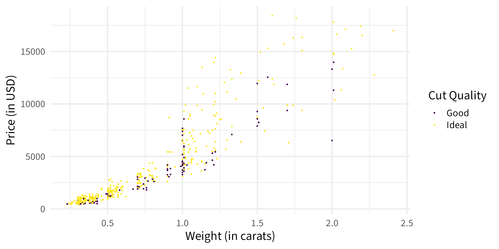

| species | island | bill_length_mm | bill_depth_mm | flipper_length_mm | body_mass_g | sex | year |
|---|---|---|---|---|---|---|---|
| Adelie | Torgersen | 39.1 | 18.7 | 181 | 3750 | male | 2007 |
| Adelie | Torgersen | 39.5 | 17.4 | 186 | 3800 | female | 2007 |
| Adelie | Torgersen | 40.3 | 18.0 | 195 | 3250 | female | 2007 |
| Adelie | Torgersen | NA | NA | NA | NA | NA | 2007 |
| Adelie | Torgersen | 36.7 | 19.3 | 193 | 3450 | female | 2007 |
| Adelie | Torgersen | 39.3 | 20.6 | 190 | 3650 | male | 2007 |
Welcome to Stat120!
Prof Amanda Luby | Fall 2025
Plan for today
- Syllabus/About the Course
- Intro to Data
A bit about me
- This is my first year at Carleton!
- I live near campus and you may see me walking with my dog (Pearl), my child (Ellis), and my spouse (Bret)
- I have a PhD in Statistics & Data Science from Carnegie Mellon in Pittsburgh, and I taught for 5 years at Swarthmore College before joining the faculty here
- I’m a first gen college student!
- My research area is models for decision-making, particularly applied to forensic science
- My office is downstairs in the Math/Stat wing at the end of the hallway (with the giant windows!)
A bit about me
- Something I’m proud of
- Something I’m nervous about
Syllabus
Statistical Literacy is a key skill for many different courses and majors, and becoming necessary to be a responsible citizen in “the real world”. In this course, we’ll lay the foundations for statistical literacy and learn basic data analysis skills. Upon completion of the course, I expect you to be able to:
Work with and describe various types of data
Understand the role of variation and randomness and the principles of statistical inference
Choose the appropriate statistical analysis for a given task and recognize when certain statistical analyses are not appropriate
Analyze data and apply statistical methods using R and interpret results
Critically examine analyses of data and interpretations of results from statistical methods
There are no prerequisites for this course, and you do need to have any background in statistics, mathematics, or computer science to do well. If you’ve already taken Math 211, Psych 200, Psych 201, SOAN 239, or Stat 250, a different statistics class may be more appropriate for you. Please see me if this is the case.
General Flow of the Course
Data
- Collecting Data
- Exploratory Data Analysis
- Uni- and Multi-variate
Introduction to Statistical Inference
- Sampling Uncertainty
- Confidence Intervals
- Hypothesis Tests
Formal Inference
- Specific settings
- Working on projects
Textbook:
- Statistics: Unlocking the Power of Data by Lock, Lock, Lock, Lock, and Lock. (3rd Edition)
- On reserve at the library if you are not able to purchase it.
- Homework will be assigned from the chapter, so please make sure you’re working out of the right edition
- Some days I’ll ask you to skim chapters before class; other times I’ll ask you to read them after class.
- Stat 120 Lab Manual by Chihara & Loy
- Freely available online
- Reference for using R
What do we do in class?
- Daily attendance is expected
- Please come to class prepared. Check moodle for any before class tasks and complete the daily check-in on gradescope
- Please bring a laptop
- For each class, I’ll post a handout and slides. During class, you should fill in the handout. These become your reference materials for the class. I’ll bring blank printed copies for the first few weeks.
What do I do if I’m sick?
- If you feel a little under the weather, wear a mask
- If you feel fine but have a cough, wear a mask
- If you have a stomach bug please do not come to class. Complete the daily check-in, send me an email, and check with a classmate to catch up
- If you have a more serious sickness, please contact the health center and do not come to class. If you feel well enough, complete the daily check-in, send me an email, and check with a classmate to catch up. If you do not feel well enough to keep up with the material, send me an email. If you need to miss more than 1 day of class due to an illness, please contact me and your class dean to arrange alternative due dates.
Assignments
- Homework will be assigned once per week, due on gradescope by midnight on Wednesday (Friday in week 4, 7, 9)
- No-questions-asked 12 hour grace period if you need it
- (grace period = no penalty, but help is generally not available anymore)
- Alternative due dates must be arranged in advance
- Assignment submissions should be typeset using rmarkdown OR neatly written and scanned and submitted as a PDF file.
- You’re responsible for submitting readable work and properly marking your questions on gradescope
Regrade request policy
- Can be submitted on gradescope within 2 weekdays after graded homework has been returned
- Use for administrative errors or obvious grading mistakes
- “The grader said I didn’t answer this but it’s at the bottom of the page”
- “It said the answer is 4.39 and I put 4.387”
- Do not use for anything that applied to the entire class
- “I think this mistake should only be worth 1 point instead of 2”
- “I didn’t realize we had to do X”
- If you submit two or more inappropriate regrade requests, I won’t consider any more from you during the term
- Come talk to me with any questions!
Exams
- While I believe most of your learning in this course will happen through working on homework and your project, part of being literate in statistics is being able to recall basic concepts and interpret analyses “on the fly”, without access to other resources
- There will be three in-class exams, tentatively scheduled for Fridays of Week 3, 6, and 9
- If I need to reschedule, I’ll give you at least two weeks notice.
- Any conflicts must be communicated to me in writing at least two weeks in advance to be able to schedule a make-up time
- If an emergency arises and you’re unable to take the exam, please contact me and your class deans as soon as possible.
Final Project
- Group data analysis project
- Poster session on the last day of class
- Final paper due during finals period
- Short proposal is due before the midterm break
How will my final grade be calculated?
- 15% homework
- 5% daily check-ins (lowest 3 will be dropped)
- 15% each exam (45% total)
- 15% final paper
- 15% final project
- 5% participation and in-class activities
- Letter grades will be assigned based on the usual grading scale (A = 93%+, A- = 90-92.9%, B+ = 88-89.9%, B = 83-87.9, etc.)
Advice from past intro stat students:
“Don’t be afraid to ask questions. Even if you think they’re really stupid, asking them could help you understand so many concepts.”
“Ask questions! Prof. Luby is extremely helpful and approachable”
Stay on top of work, especially homework”
“Take detailed notes, start homework assignments early and attend office hours if you have any questions.”
“Use the notes sets to make studying for each exam easier”
“The second half of the course is intimidating but I promise if you continue to ask clarifying questions about topics that are confusing, you’ll get a good understanding of it by the end! The course is really fun and you can get a lot out if it, so try to enjoy it as well!”
“Do a lot of practice”
“i would say to not be afraid of using R. it really isnt as bad as it looks and can be pretty fun to use if you just learn the fundamentals of it”
“Work with other people in the class, collaboration is key”
“Be willing to ask lots of questions and don’t be afraid to ask for help!”
“I would advise for them to attend office hours and the stat clinic since early on to get help and not be worrying about assignments at the last minute.”
“I would advise future students to reach out and ask questions as soon if they have any confusion. Understanding statistical concepts and working with R can be frustrating at times, but people are here to help you along the way!”
“Don’t let work snowball! Try to get help early and often and an imperfect problem set is better than no problem set.”
“lots of R here! Organization is key, and you’ll do well as long as you start homeworks early, communicate with the professor and with your fellow classmates. There’s a good support system.”
Getting Help
This course was not designed for you to do on your own in your dorm room every week, and I expect you to need some help on most assignments.
Office Hours are held in my office (CMC 223). You can come and go as you please! These are open to all students in the class so you may need to wait a little while to have your specific question answered. These are best for homework questions and conceptual questions about material
Individual Appointments will often be available on Mondays (and sometimes other days). Appointment slots open 5 days in advance and close 2 hours in advance. Please use these for in-depth conversations about grade concerns, project consultations, or if you need extra help on a specific concept. You’re welcome to come as a group, but please note that 15 minutes goes by fast!
Stat Lab is staffed by friendly and knowledgeable student assistants who can help you with R questions that arise on your homework or projects. Please come prepared with your attempt, your class notes, and your lab manual to make the most of your time. See schedule for assistants and availability
Slack is an asychronous communication platform where you can also ask homework questions anytime! I’ll respond to messages at least twice per weekday. If you see someone ask a question that you know the answer to, please respond!
Getting Help
There are many opportunities for you to get help throughout the week, and you should try to use all of them at some point!
Sunday: Stat Lab 1-5pm and 8-10pm
Monday: Individual appointments available; Stat Lab 7-11pm
Tuesday: Office Hours 10:30-11:30am; Stat Lab 7-11pm
Wednesday: Office Hours 2-3pm; Stat Lab 7-11pm (Homework due)
Thursday: Stat Lab 7-11pm
Friday: Office Hours 1-2pm; (Homework due weeks 4, 7, 9)
Saturday: Stat Lab 2-4pm
Anytime: Ask questions on slack
Contacting Me
The best way to get your questions answered is to reach out via slack (you should have received an invitation this morning):
- R Help (use
r-helpchannel) - Clarifications and questions about homework (use
homeworkchannel) - Logistical questions (use
generalchannel) - Setting up a meeting outside of appointment slots (use a private message)
If you have questions about the course material, there’s a good chance others do too! If you ask a question in a private message that I think would be helpful for everybody, I may ask you to post it in a public channel instead.
Sensitive/private topics, or anything you want a more formal record of, should still come to my email (it just might take me longer to respond)
My office
Drop in for as long as you’d like during office hours!
Blinds and door open = feel free to knock and ask a quick question
Blinds open but door shut = I’m working on something or on a call. Feel free to knock if it’s time-sensitive
Blinds and door closed = Please check back in 30 minutes or send me a slack message instead
The “Genius Myth”
I’ve found that many students buy into the “genius myth” when it comes to math/stat courses: that you need to be a “math person” and have some innate mathematical ability in order to do well or become a statistics major. This could not be further from the truth! The best statisticians don’t necessarily have the “best” math or programming background, but are people that are able to formulate interesting questions and use math and programming to rigorously answer those questions. Many of the best statisticians I know became statisticians because they were initially interested in something else (biology, public health, psychology, neuroscience, physics, etc.) and realized that being able to answer important questions with data was not only valuable but fun and interesting. Being able to perform interesting statistical analyses is a skill that is learned, not an innate ability, and working hard at developing that skill is the point of this course.
Academic Integrity
I encourage you to discuss the homework problems with others and use the resources available to you to try to figure out tough problems. You should code and write up your solutions on your own. Exams must be done by yourself without communicating with others; all work must be your own. The use of textbook solution manuals (physical or online), course materials from other students, or materials from previous versions of this course are not allowed. Large-language models (e.g. ChatGPT, Gemini, etc.) should only be used for coding help after you’ve attempted to solve the problem on your own, and you should never type homework problems directly into a prompt. Copying, paraphrasing, summarizing, or submitting work generated by anyone but yourself without proper attribution is considered academic dishonesty (this includes output from LLMs).
I also have a few rules in place to protect my intellectual property. You may not record my lectures using tools such as Otter.ai or upload any video or audio recordings to generate transcripts or study notes. You may not upload my course materials (slides, assignment prompts, note sets, etc.) into AI tools or homework help sites (such as chegg).
“AI” tools are new for all of us and it’s OK to have questions about what is and isn’t appropriate. Please ask if you are unsure of whether or not your actions are complying with the assignment/exam/project instructions. Always default to acknowledging any help received. Cases of suspected academic dishonesty are handled by the Provost’s Office and I am obligated to report any suspected violations of this policy.
Diversity & Inclusion
We all come to class with different backgrounds and experiences, and this diversity makes our class environment richer. We value diversity and inclusion, and are committed to a climate of mutual respect and full participation in and out of the classroom. This class strives to be a learning environment that is usable, equitable, inclusive and welcoming, regardless of race, ethnicity, religion, gender and gender identities, sexual orientation, ability, socioeconomic background, and nationality. If you anticipate or experience any barriers to learning, please discuss your concerns with me.
Accomodations
The Office of Accessibility Resources (Henry House, 107 Union Street) is the campus office that collaborates with students who have disabilities to provide and/or arrange reasonable accommodations. If you have, or think you may have, a disability, please contact OAR@carleton.edu to arrange a confidential discussion regarding equitable access and reasonable accommodations. You are also welcome to contact me privately to discuss your academic needs. However, all disability-related accommodations must be arranged, in advance, through OAR.
If you have an extra time accommodation for exams, please schedule them through OAR.
Title IX
Please be aware that all faculty are “responsible employees”, which means that if you tell me about a situation involving sexual harassment, sexual assault, dating violence, domestic violence, or stalking, I must share that information with the Title IX Coordinator. Although I have to make this notification, you will control how your case will be handled, including whether or not you wish to meet with the Title IX coordinator or pursue a formal complaint.
Take care of yourself
Do your best to maintain a healthy lifestyle this term by wearing a mask when you’re sick, eating a vegetable every now and then, exercising, avoiding excessive drug and alcohol use, getting enough sleep, and taking some time to relax. Your physical and mental health is more important than your grade in this course. There are many helpful resources available on campus and an important part of the college experience is learning how to ask for help. For more information, see Student Health and Counseling (SHAC), the Office of Health Promotion, or the Office of the Chaplain. If you are experiencing physical or mental health symptoms as a result of coursework, please speak with me so we can address the problem together.
Intro to Data
The palmerpenguins data

Data were collected and made available by Dr. Kristen Gorman and the Palmer Station, Antarctica LTER, a member of the Long Term Ecological Research Network.
Data as a “spreadsheet”
Definitions
Cases
Also called “units” or “observations”. Generally correspond to rows in a dataset. What does each “data point” represent
Variables
Characteristics that are recorded for each case. Generally correspond to columns in the dataset


Types of Variables
flowchart LR A(Categorical) --> B(Ordered/Ordinal) A --> C(Binary) A --> D(Categorical)
flowchart LR A(Quantitative) --> B(Discrete) A --> C(Continuous)
Example 3.1: Penguins
# A tibble: 344 × 8
species island bill_length_mm bill_depth_mm flipper_length_mm body_mass_g
<fct> <fct> <dbl> <dbl> <int> <int>
1 Adelie Torgersen 39.1 18.7 181 3750
2 Adelie Torgersen 39.5 17.4 186 3800
3 Adelie Torgersen 40.3 18 195 3250
4 Adelie Torgersen NA NA NA NA
5 Adelie Torgersen 36.7 19.3 193 3450
6 Adelie Torgersen 39.3 20.6 190 3650
7 Adelie Torgersen 38.9 17.8 181 3625
8 Adelie Torgersen 39.2 19.6 195 4675
9 Adelie Torgersen 34.1 18.1 193 3475
10 Adelie Torgersen 42 20.2 190 4250
# ℹ 334 more rows
# ℹ 2 more variables: sex <fct>, year <int>Example 3.2: Prices of diamonds
Example 3.3: Is there a “Sprinting Gene”?
A gene called ACTN3 encodes a protein which functions in fast-twitch muscles. Some people have a variant of this gene that cannot yield this protein. To address the question of whether this gene is associated with sprinting ability, geneticists tested people from three different groups: world-class sprinters, world-class marathon runners, and a control group of non-athletes. In the sames tested, 6% of the sprinters had the gene variant, compared with 18% of non-athletes and 24% of the marathon runners.
Wrap Up
Upcoming
- HW1 is posted on moodle (due on Wednesday)
- Video posted later today to watch before Wednesday’s class